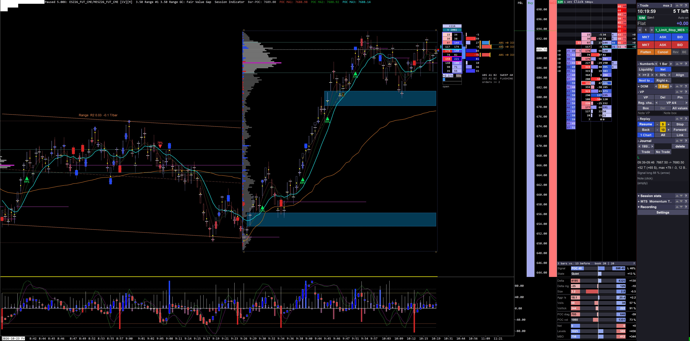

A custom trading interface built entirely inside Sierra Chart – only with the official ACSIL study interface, no external program, no rebuild of other software. Click a highlighted area to see what it does – including the journal that turns every trade idea into a case.
